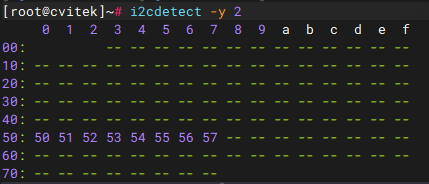

5. I2C 操作指南¶
本文档说明在 CV184x 平台上使用 I2C 总线进行读写操作、速率配置、GPIO 模拟 I2C、 Recovery 功能以及内核态/用户态编程的完整流程。
5.1. 操作准备¶
使用 I2C 前需满足以下条件：
使用官方发布的SDK编译后的内核镜像（默认已包含 I2C 相关驱动）。
配置文件路径一般为 build/boards/cv184x/板名/linux/板名_defconfig 。
CONFIG_I2C_CHARDEV=y
CONFIG_I2C_DESIGNWARE_PLATFORM=y
5.1.1. 切换引脚（将引脚复用到 I2C 功能）¶
若 I2C 使用的 SCL/SDA 引脚当前被复用作其他功能，需先切换到 I2C 功能。以下以 I2C2 为例。
1. 查看 I2C2_SCL 引脚当前功能
cvi_pinmux -r IIC2_SCL
# 输出显示当前功能，例如：PWR_GPIO_12（请以实际输出为准）
2. 将引脚功能设置为 IIC2_SCL
cvi_pinmux -w IIC2_SCL/IIC2_SCL
# 表示将引脚功能设置为 IIC2_SCL
3. 修改 I2C2_SDA 引脚
按同样方式对 IIC2_SDA 执行 cvi_pinmux -r IIC2_SDA 查看后，再使用
cvi_pinmux -w IIC2_SDA/IIC2_SDA 切换到 I2C 功能。
5.2. 操作过程¶
启动系统 默认 I2C 相关模块已编入内核，无需单独加载模块；系统启动后即可使用 I2C。
进行 I2C 读写 在串口或 SSH 终端中执行下文中的 i2c-tools 命令，或在内核态/用户态编写程序， 对挂载在对应 I2C 总线上的从设备进行读写。
5.3. 接口速率设置说明¶
I2C 总线速率由设备树中的 clock-frequency 决定，单位为 Hz。修改后需重新编译内核。
DesignWare I2C 驱动仅支持以下 4 种速率，设置其他值会导致该 I2C 控制器初始化失败：
模式 |
clock-frequency 值 |
说明 |
|---|---|---|
Standard Mode |
|
100 kHz，标准模式 |
Fast Mode |
|
400 kHz，快速模式（默认） |
Fast Mode Plus |
|
1 MHz，快速模式+ |
High Speed Mode |
|
3.4 MHz，高速模式（目前设备不支持） |
注解
High Speed Mode 需要硬件 IP 支持，CV184x 目前最高支持 Fast Mode，驱动会自动降回 Fast Mode。
频率越高对 PCB 走线质量、上拉电阻阻值、总线电容等要求越严格，建议用示波器确认信号质量。
修改位置： 文件 build/boards/default/dts/cv184x/cv184x_base.dtsi；若使用定制板，则修改对应板级 DTS 中引用的该节点或覆盖该属性。
示例： 将 i2c0 速率设为 400kHz
i2c0: i2c@04000000 {
compatible = "snps,designware-i2c";
clocks = <&clk CV184X_CLK_I2C>;
reg = <0x0 0x04000000 0x0 0x1000>;
clock-frequency = <400000>;
#size-cells = <0x0>;
#address-cells = <0x1>;
resets = <&rst RST_I2C0>;
reset-names = "i2c0";
};
5.4. I2C 读写命令示例（i2c-tools）¶
以下命令在 Linux 终端中执行，需已安装 i2c-tools。cv184x 平台常见总线编号为 i2c-0～i2c-4。
1. 列出系统中的 I2C 总线
i2cdetect -l
2. 扫描某条总线上的从设备地址
i2cdetect -y -r N
# N 为总线编号，例如扫描 i2c-2：
i2cdetect -y -r 2
# 扫描 i2c-3：
i2cdetect -y -r 3
# 扫描 i2c-4：
i2cdetect -y -r 4
# 扫描 i2c-5：
i2cdetect -y -r 5

3. 批量读取从设备寄存器（以 8 位寄存器地址为例）
i2cdump -f -y N M
# N：总线编号；M：从设备 7 位地址（十六进制，可省略 0x 前缀）
# 示例：读取 i2c-2 上地址 0x50 的设备的全部寄存器
i2cdump -f -y 2 0x50
4. 读取单个寄存器
i2cget -f -y 0 0x3c 0x00
# 从 i2c-0 上地址 0x3c 的设备读取寄存器 0x00 的值
5. 写入单个寄存器
i2cset -f -y 0 0x3c 0x40 0x12
# 向 i2c-0 上地址 0x3c 的设备的寄存器 0x40 写入数据 0x12
5.5. GPIO 模拟 I2C（以 I2C-2 为例）¶
当硬件未引出硬件 I2C2 或需用普通 GPIO 模拟 I2C 时，可使用内核的 i2c-gpio 驱动。
以下示例将 I2C 总线编号 2 配置为 GPIO 模拟。
步骤 1：修改设备树
在板级内核配置文件中确保以下选项已开启。配置文件路径一般为 build/boards/cv184x/板名/linux/板名_defconfig 。
CONFIG_I2C_GPIO=y
编辑板级 DTS 文件，路径一般为 build/boards/cv184x/板名/dts_arm/板名.dts ，其中”板名”替换为实际板卡名称，具体以 SDK 为准。
关闭硬件 I2C2 节点，并添加 GPIO 模拟 I2C 节点，示例如下。可根据开发板引脚实际情况选用任意可用 GPIO 作为 SCL/SDA 进行模拟 I2C（需保证该引脚在 pinmux 中可配置为 GPIO 且未被其他外设占用）。
/dts-v1/;
#include "cv184x_base_arm.dtsi"
#include "cv184x_asic_bga.dtsi"
#include "cv184x_asic_spinor.dtsi"
#include "cv184x_default_memmap.dtsi"
&i2c2 {
status = "disabled";
scl-gpios = <0>;
sda-gpios = <0>;
};
/ {
sysdma_remap {
ch-remap = <CVI_I2S0_RX CVI_I2S2_TX CVI_SPI1_RX CVI_SPI1_TX
CVI_SPI_NOR_RX CVI_SPI_NOR_TX CVI_I2S2_RX CVI_I2S3_TX>;
};
aliases {
i2c2 = &i2c2_gpio;
};
i2c2_gpio: i2c@2 {
compatible = "i2c-gpio";
i2c-gpio,delay-us = <25>; /* 约 20kHz，低速更稳定 */
gpios = <&porte 13 (GPIO_ACTIVE_HIGH | GPIO_OPEN_DRAIN)>,
<&porte 12 (GPIO_ACTIVE_HIGH | GPIO_OPEN_DRAIN)>;
i2c-gpio,sda-open-drain;
i2c-gpio,scl-open-drain;
#address-cells = <1>;
#size-cells = <0>;
status = "okay";
linux,init-delay = <200>; /* 上电延迟 200ms，避免与其它外设冲突 */
};
};
说明： GPIO 引脚（如 porte 12/13）需根据实际原理图修改为当前板子使用的 SDA/SCL 引脚。其中 porte 可根据 GPIO 所在的组改为 porta、portb、portc、portd 或 porte，引脚号为该组内 0～31。若不需要固定为 i2c-2，可注释掉 aliases 部分，由内核自动分配总线号，从而实现绑定到其他总线（如 i2c-4、i2c-5 等）。
步骤 2：验证 GPIO 模拟 I2C-2
重新编译并烧录内核后，在终端执行：
列出 I2C 总线，确认存在
i2c-2：i2cdetect -l

扫描 i2c-2 上的设备：
i2cdetect -y 2
写入并读回数据（示例地址 0x50）：
i2cset -y 2 0x50 0x00 0xAA i2cget -y 2 0x50 0x00 # 正常时应输出 0xaa
{kind=link}
5.6. I2C Recovery 配置说明¶
当 I2C 总线发生死锁（如从设备拉低 SDA 不释放）时，可通过 I2C Recovery 功能由内核 在检测到超时后切换为 GPIO 模式模拟时钟，尝试恢复总线。该功能在默认设备树中可能 被注释或未使能，需要手动在板级 DTS 中配置。
启用步骤：
编辑板级设备树 打开：
build/boards/cv184x/board_name/dts_arm/board_name.dts（将 board_name 替换为实际板卡名称）。为对应 I2C 节点添加 Recovery 相关属性 在需要 Recovery 的
&i2cN节点中增加scl-pinmux、sda-pinmux、scl-gpios、sda-gpios，使内核在 Recovery 时能通过 GPIO 驱动 SCL/SDA。重新编译内核 保存 DTS 后重新编译内核/设备树并烧录，使配置生效。
各 I2C 控制器 Recovery 配置示例（仅供参考，请根据板子实际使用的 SCL/SDA 引脚修改）：
I2C0：
&i2c0 {
scl-pinmux = <0x03001070 0x0 0x3>; /* IIC0_SCL → XGPIOA[28] */
sda-pinmux = <0x03001074 0x0 0x3>; /* IIC0_SDA → XGPIOA[29] */
scl-gpios = <&porta 28 GPIO_ACTIVE_HIGH>;
sda-gpios = <&porta 29 GPIO_ACTIVE_HIGH>;
};
I2C1：
&i2c1 {
scl-pinmux = <0x0300111c 0x2 0x3>; /* IIC1_SCL → XGPIOB[7] */
sda-pinmux = <0x03001118 0x2 0x3>; /* IIC1_SDA → XGPIOB[8] */
scl-gpios = <&portb 7 GPIO_ACTIVE_HIGH>;
sda-gpios = <&portb 8 GPIO_ACTIVE_HIGH>;
};
I2C2：
&i2c2 {
scl-pinmux = <0x030010b8 0x0 0x3>; /* IIC2_SCL → XPWR_GPIO[12] */
sda-pinmux = <0x030011bc 0x0 0x3>; /* IIC2_SDA → XPWR_GPIO[13] */
scl-gpios = <&porte 12 GPIO_ACTIVE_HIGH>;
sda-gpios = <&porte 13 GPIO_ACTIVE_HIGH>;
};
I2C3：
&i2c3 {
scl-pinmux = <0x03001014 0x0 0x3>; /* IIC3_SCL → XGPIOA[5] */
sda-pinmux = <0x03001018 0x0 0x3>; /* IIC3_SDA → XGPIOA[6] */
scl-gpios = <&porta 5 GPIO_ACTIVE_HIGH>;
sda-gpios = <&porta 6 GPIO_ACTIVE_HIGH>;
};
I2C4：
&i2c4 {
scl-pinmux = <0x030010f0 0x2 0x3>; /* IIC4_SCL → XGPIOB[1] */
sda-pinmux = <0x030010f4 0x2 0x3>; /* IIC4_SDA → XGPIOB[2] */
scl-gpios = <&portb 1 GPIO_ACTIVE_HIGH>;
sda-gpios = <&portb 2 GPIO_ACTIVE_HIGH>;
};
参数说明：
scl-pinmux和sda-pinmux: 定义SCL和SDA引脚的复用配置第一个参数：引脚复用寄存器地址
第二个参数：I2C功能选择值
第三个参数：GPIO功能选择值
scl-gpios和sda-gpios: 定义recovery时使用的GPIO引脚格式：
<&gpio_port pin_number polarity>GPIO_ACTIVE_HIGH表示高电平有效
注解
启用I2C recovery功能后，当检测到总线死锁时，系统会自动切换到GPIO模式进行总线恢复
只有在遇到I2C总线死锁问题时才需要启用此功能
修改设备树后需要重新编译内核才能生效
5.7. 内核态 I2C 读写程序示例¶
以下展示在内核驱动中通过 I2C 子系统访问从设备的标准流程与完整示例代码。
流程概述：
使用
i2c_get_adapter(bus_id)获取 I2C 适配器。使用
i2c_new_client_device()在总线上创建设备客户端（5.10 内核推荐，失败时返回ERR_PTR；亦可使用i2c_new_probed_device等）。使用
i2c_master_send/i2c_master_recv进行读写；使用完毕后i2c_unregister_device、i2c_put_adapter。
完整内核模块示例（含头文件、初始化、写寄存器、读寄存器、模块入口）：
1#include <linux/module.h>
2#include <linux/i2c.h>
3#include <linux/err.h>
4#include <linux/errno.h>
5#include <linux/kernel.h>
6
7/* 设备地址需与实际从设备一致；总线号对应 i2c-0, i2c-1, ... */
8#define I2C_DEV_ADDR 0x3c
9#define I2C_BUS_NUM 0
10
11static struct i2c_client *client;
12
13/* 写寄存器：buf[0]=寄存器地址，buf[1]=数据 */
14static int __used i2c_dev_write(u8 reg, u8 value)
15{
16 u8 buf[2] = { reg, value };
17 int ret = i2c_master_send(client, buf, sizeof(buf));
18 if (ret < 0)
19 pr_err("Write failed: %d\n", ret);
20 return ret;
21}
22
23/* 读寄存器：先发寄存器地址，再读 1 字节 */
24static int __used i2c_dev_read(u8 reg, u8 *out_val)
25{
26 int ret;
27
28 ret = i2c_master_send(client, ®, 1);
29 if (ret < 0) {
30 pr_err("Register select failed: %d\n", ret);
31 return ret;
32 }
33
34 ret = i2c_master_recv(client, out_val, 1);
35 if (ret < 0)
36 pr_err("Read failed: %d\n", ret);
37 return ret;
38}
39
40static int __init cvi_i2c_dev_init(void)
41{
42 struct i2c_adapter *adapter;
43 struct i2c_board_info info = {
44 I2C_BOARD_INFO("dummy", I2C_DEV_ADDR),
45 };
46
47 adapter = i2c_get_adapter(I2C_BUS_NUM);
48 if (!adapter) {
49 pr_err("I2C adapter not found\n");
50 return -ENODEV;
51 }
52
53 /* 5.10 内核使用 i2c_new_client_device，失败时返回 ERR_PTR */
54 client = i2c_new_client_device(adapter, &info);
55 i2c_put_adapter(adapter);
56
57 if (IS_ERR(client)) {
58 pr_err("Device registration failed: %ld\n", PTR_ERR(client));
59 return PTR_ERR(client);
60 }
61
62 pr_info("I2C device initialized\n");
63 return 0;
64}
65
66static void __exit cvi_i2c_dev_exit(void)
67{
68 i2c_unregister_device(client);
69 pr_info("I2C device removed\n");
70}
71
72module_init(cvi_i2c_dev_init);
73module_exit(cvi_i2c_dev_exit);
74
75MODULE_LICENSE("GPL");
76MODULE_DESCRIPTION("CVI I2C device driver - kernel I2C read/write example");
77MODULE_AUTHOR("Your Name");
5.8. 用户态 I2C 读写程序示例¶
以下演示在用户空间通过 /dev/i2c-N 与 ioctl(I2C_SLAVE / I2C_RDWR) 访问 I2C 设备。
注解
内核需开启
CONFIG_I2C_CHARDEV，并确保当前用户有权限访问/dev/i2c-*。
完整用户态程序示例（含头文件、写寄存器、读寄存器及 I2C_M_RD 兼容）：
1/*
2 * 用户态 I2C 读写示例：通过 /dev/i2c-N 与 ioctl(I2C_SLAVE / I2C_RDWR) 访问 I2C 设备。
3 * 需内核开启 CONFIG_I2C_CHARDEV，且当前用户有权限访问 /dev/i2c-*。
4 */
5#include <stdio.h>
6#include <stdlib.h>
7#include <fcntl.h>
8#include <unistd.h>
9#include <stdint.h>
10#include <linux/i2c-dev.h>
11#include <sys/ioctl.h>
12
13#if defined(__has_include) && __has_include(<linux/i2c.h>)
14# include <linux/i2c.h>
15#else
16/* 工具链无 linux/i2c.h 时提供与内核 ABI 一致的最小定义 */
17# ifndef I2C_M_RD
18# define I2C_M_RD 0x0001
19# endif
20struct i2c_msg {
21 uint16_t addr;
22 uint16_t flags;
23 uint16_t len;
24 uint8_t *buf;
25};
26#endif
27
28#define I2C_DEV_PATH "/dev/i2c-0"
29#define I2C_SLAVE_ADDR 0x3C /* 7 位从设备地址 */
30
31/* 写寄存器：先发寄存器地址，再发数据 */
32static int i2c_write_reg(int fd, uint8_t reg, uint8_t value)
33{
34 uint8_t buf[2] = { reg, value };
35
36 if (write(fd, buf, sizeof(buf)) != (ssize_t)sizeof(buf)) {
37 perror("Write failed");
38 return -1;
39 }
40 return 0;
41}
42
43/* 读寄存器：先写寄存器地址，再读数据（使用 I2C_RDWR 组合为一笔事务） */
44static int i2c_read_reg(int fd, uint8_t reg_addr, uint8_t *data)
45{
46 struct i2c_msg messages[2];
47 struct i2c_rdwr_ioctl_data packet;
48
49 messages[0].addr = I2C_SLAVE_ADDR;
50 messages[0].flags = 0; /* 写 */
51 messages[0].len = 1;
52 messages[0].buf = ®_addr;
53
54 messages[1].addr = I2C_SLAVE_ADDR;
55 messages[1].flags = I2C_M_RD; /* 读 */
56 messages[1].len = 1;
57 messages[1].buf = data;
58
59 packet.msgs = messages;
60 packet.nmsgs = 2;
61
62 if (ioctl(fd, I2C_RDWR, &packet) < 0) {
63 perror("Read failed");
64 return -1;
65 }
66 return 0;
67}
68
69int main(void)
70{
71 int i2c_fd;
72 uint8_t reg = 0x00;
73 uint8_t value = 0x55;
74 uint8_t data = 0;
75
76 /* 步骤 1：打开 I2C 总线设备并设置从设备地址 */
77 i2c_fd = open(I2C_DEV_PATH, O_RDWR);
78 if (i2c_fd < 0) {
79 perror("Failed to open I2C device");
80 return EXIT_FAILURE;
81 }
82
83 if (ioctl(i2c_fd, I2C_SLAVE, I2C_SLAVE_ADDR) < 0) {
84 perror("Failed to set slave address");
85 close(i2c_fd);
86 return EXIT_FAILURE;
87 }
88
89 /* 步骤 2：写入寄存器 */
90 if (i2c_write_reg(i2c_fd, reg, value) < 0) {
91 close(i2c_fd);
92 return EXIT_FAILURE;
93 }
94
95 /* 步骤 3：读取寄存器 */
96 if (i2c_read_reg(i2c_fd, reg, &data) < 0) {
97 close(i2c_fd);
98 return EXIT_FAILURE;
99 }
100
101 printf("Read value: 0x%02X\n", data);
102
103 close(i2c_fd);
104 return EXIT_SUCCESS;
105}